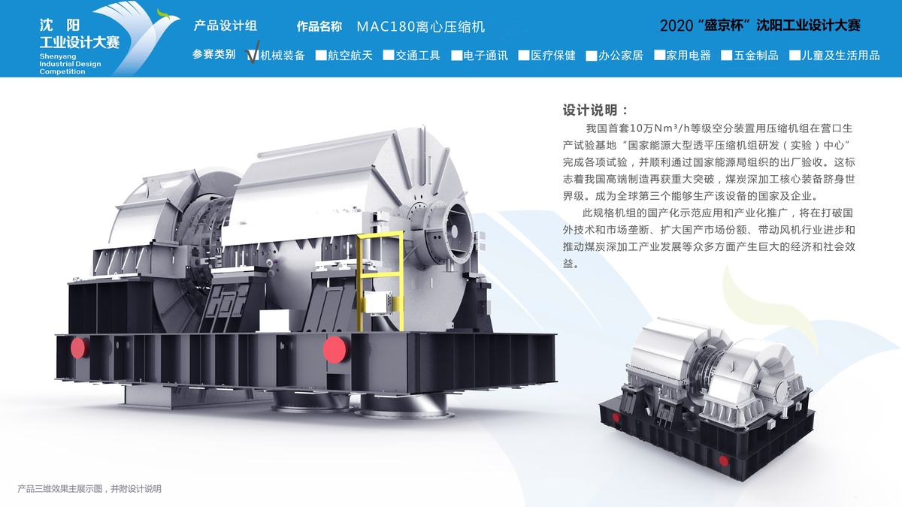
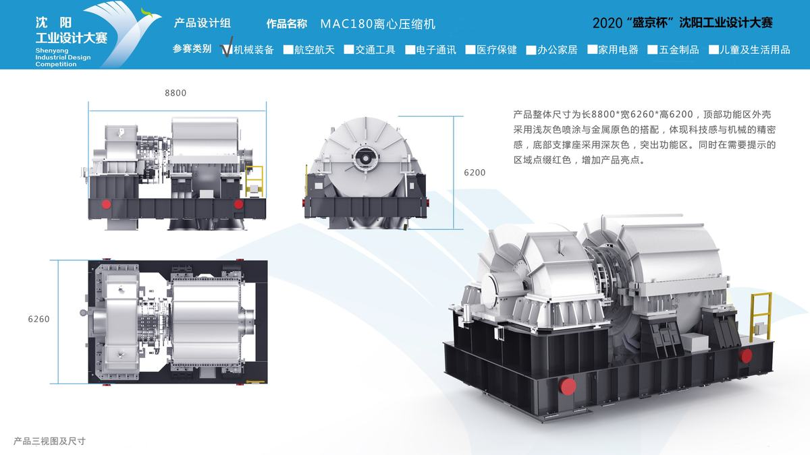
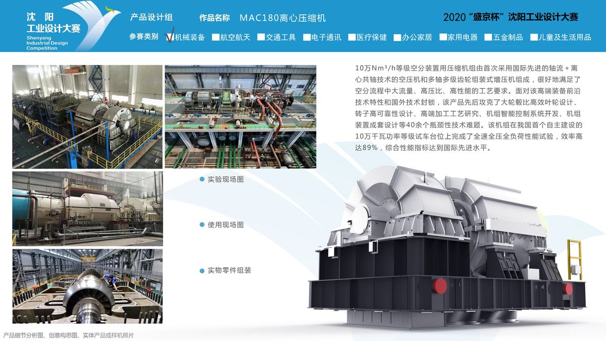

空分装置是煤化工流程的“龙头”装置，为后续流程提供氧气。核心设备的大型化是空分装置降低投资成本、产出能耗比的最佳途径，其中压缩机是空分装置中最重要的核心动设备，属于国际前沿的高新技术装备。
以往，大型空分装置用压缩机组核心技术被国外长期垄断，10万Nm3/h制氧量空分（简称：十万空分）装置的压缩机不得不全部依赖进口，耗费国家大量的外汇储备，同时也严重制约我国煤化工行业的发展，对我国的能源安全影响十分巨大。 沈阳鼓风机集团股份有限公司（以下简称“沈鼓集团”）是中国重大技术装备行业的支柱型、战略型领军企业，担负着为石油、化工、空分、电力、冶金、环保、国防等关系国计民生的重大工程项目提供国产装备的任务，其生存与发展关系到国家经济安全，被党和国家领导人誉为“国家砝码”。
多年来，沈鼓集团坚持技术创新、管理创新、人才体制创新和文化创新，不断实现重大装备国产化新突破。目前，沈鼓已具备百万吨乙烯压缩机组、千万吨炼油装置、大型PTA、大型LNG、大型MTO、大型长输管线压缩机、150吨大推力往复压缩机，以及AP1000核主泵、核二级泵、核三级泵、国防海军装备用泵等重大技术装备研发制造能力，大型离心压缩机总体设计制造技术已达到国际先进水平，十万空分机组的国产化重任理所当然的落在了沈鼓集团的肩膀上。
2015年8月23日，沈鼓集团自主研发的我国首套十万空分装置用压缩机组在沈鼓集团营口生产试验基地“国家能源大型透平压缩机组研发（实验）中心”完成各项试验，并顺利通过国家能源局组织的出厂验收。这标志着我国高端制造再获重大突破，煤炭深加工核心装备跻身世界级。 沈鼓集团打破了国外技术垄断，使中国成为世界第二个拥有十万等级空分装置用大型压缩机组核心技术的国家，有力保障了我国能源产业安全，标志着我国在高端装备制造领域又迈出坚实一步。
产品的成功投运，为国家节省1200万美元/台。项目成果已应用于某大型煤化工企业10.5万空分等多个装置，其核心技术可推广到10-15万等级空分、大型乙烯、炼油等领域。根据国家《能源发展“十三五”规划》，大型空分机组应用前景可观。
（1）设计概念创新。面对该高端装备前沿技术特性和国外技术封锁，沈鼓集团自主创新、集智攻关，通过完全自主创新，揭示了轴流/离心压缩机多级耦联工作机理，建立了基于多物理场流-热-固耦合的系统动力学稳定性分析模型，突破超大流量十万空分压缩机组多约束优化气动设计方法；
（2）技术原理创新。发明了基于轴流和离心共轴的“轴流定转速离心定压比”多级增压气动性能匹配新技术，解决多机组性能匹配难题；开发了混流式高效率、高能头叶轮基本级，实现叶轮、超大尺寸三段式空心轴转子高精度制造；研制出大型机组系统运行过程智能调控成套关键技术，先后攻克了大轮毂比高效叶轮设计、转子高可靠性设计、高端加工工艺研究、机组智能控制系统开发、机组装置成套设计等40余个瓶颈性技术难题。该机组在我国首个自主建设的10万千瓦功率等级试车台位上完成了全速全压全负荷性能试验，机组效率高达89%，综合性能指标达到国际先进水平。 十万空分装置用压缩机组由首次采用国际先进的轴流＋离心共轴技术的空压机和多轴多级齿轮组装式增压机组成，很好地满足了空分流程中大流量、高压比、高性能的工艺要求。
（3）绿色节能创新。开发新模型级，节能降耗。在全球碳排放量激增、全球气候加速变暖、全球资源能源日益枯竭的背景下，本项目在设计之初就积极定位节能减排、绿色低碳，通过技术创新开发全新模型级，同时在开发过程中多专业协同开发，减少资源、能源消耗和排放，秉承以人为本和可持续发展的理念，坚持环境保护和经济发展并进的目标，呈现出绿色低碳的时代特征。
（4）协同共创创新。项目开展过程中注重共创分享的理念，积极开展结构力学、空气动力学、转子动力学多专业；现实、互联网、大数据等多领域；机械、控制、AI等多学科协同创新，使设计创新、制造服务成为新生态，合作共赢成为新共识。

